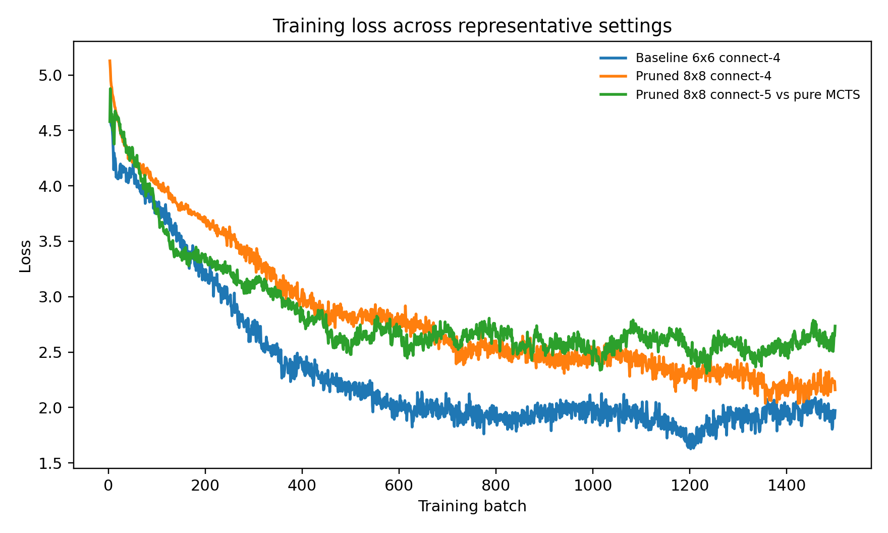
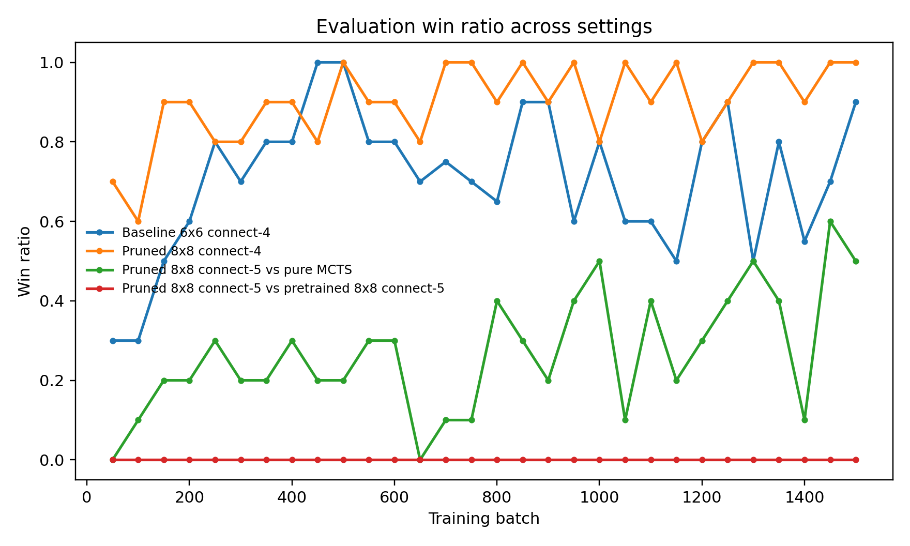
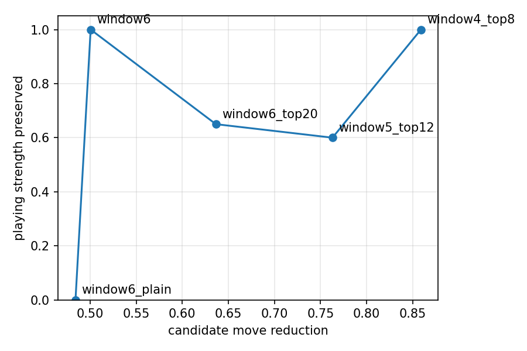

Abstract
AlphaZero self-play models are a natural choice for Gomoku. However, its associated costs grow significantly with board size, making reinforcement learning methods impractical. This is because that Monte Carlo Tree Search (MCTS) requires repetitions in scoring many legal moves at every position. In response, we study whether an interpretable candidate move restriction strategy can reduce this burden, and thereby training under larger boards would be feasible under limited compute. We implement an end-to-end Gomoku training pipeline with self-play, replay-buffer learning, a policy-value network, and both standard and pruning-aware MCTS. Our restriction method keeps only legal moves inside a local window around the actively occupied region, which effectively shrinks the branching factor before node expansion. Experiments on several Gomoku settings show that our method preserves meaningful learning dynamics while significantly improving feasibility. In our runs with one NVIDIA GeForce RTX 3070 Laptop GPU, unrestricted training on connect-5 required about 48 hours, while local restriction reduced the runtime to 7 hours, a speedup, while still reaching a best win ratio against standard MCTS. In easier settings of connect-4, the pruned model achieved a win ratio of in training time of 3 hours. These results suggest that candidate move restriction is a practical path toward scalable self-play reinforcement learning methods in real-life scenarios with large discrete action spaces.
Introduction
Self-play reinforcement learning has been influential in game-playing AI. It effectively removes the need for large amounts of labeled data, allowing models to improve through competitions against itself repeatedly. In particular, AlphaGo Zero and AlphaZero methods showed that policy-value networks with Monte Carlo Tree Search can achieve strong performance in board games, such as Go and chess. However, these successes also come with a practical limitation: these methods are computationally expensive. Their costs rise significantly with large action spaces, while leaving most legal moves unimportant.
Gomoku is a good environment for studying this problem. It has simple rules, but at the same time, the search action space is still large. In difficult settings, many available cells are irrelevant, as strong play usually concentrates near existing stones or urgent threats. In contrast, a naive self-play pipeline would treat every legal position as a candidate during the MCTS expansion. As a result, it spends lots of search effort on unimportant moves, which are unlikely to affect the game’s outcome.
Our project aims to design an interpretable move restriction rule to make AlphaZero self-play feasible for Gomoku. We start from building an AlphaZero-style baseline, and then we implement a local candidate filter in both tree expansion and action selection. The system still learns from self-play, which uses the policy network to guide search. However, during the game iterations, it only explores a restricted candidate set at each state.
The project is motivated by two goals. First, since raw branching may slow unrestricted self-play, we would like a practical training method for these environments. When developing the baseline, we found that moving from a board to an board already created a severe runtime increase, and a standard Gomoku board would be beyond the training budget. Second, we want the restriction mechanism to be interpretable. Instead of introducing another network to select action spaces, we prefer an end-to-end system that can be reasoned directly.
In this report, our project contributes by (1) implementing an end-to-end AlphaZero Gomoku pipeline, (2) introducing an interpretable local candidate move restriction mechanism for MCTS, and (3) showing that our method substantially improves training feasibility under limited compute. We implement an AlphaZero Gomoku pipeline to enable self-play, data augmentation, replay-buffer learning, evaluation against external opponents, and metric logging. We then introduce the candidate move restriction mechanism based on local search, and integrate it into the MCTS process. After the runs, we evaluate the method on multiple board and rule settings, showing pruning’s role in reducing runtime while preserving meaningful learning. Finally, we use these results to discuss when action-space restriction would be helpful, and we discuss the potential extensions with threat-aware or policy-guided filters in future work. Overall, this report provides a computationally affordable way to make self-play reinforcement learning on larger Gomoku boards more practical.
Related Work
The baseline of this work is built based on AlphaGo Zero and AlphaZero, which combine policy-value prediction with MCTS and self-play training [1, 2]. Those systems have demonstrated strong performance through repeated self-play. These methods do not rely on human policy supervision, but they also require substantial computation. Their success in performance metrics motivates our baseline design, while their computational demands motivate our search for a more efficient action space selection mechanism.
Our project also builds based on literature in MCTS. Bandit-based tree search methods, such as UCT, helped balance exploration and exploitation in sequential decision problems [3]. In other research based on this method described several ways to improve MCTS efficiency [4]. In board games, common methods for reducing wasted search include pruning and heuristic move ordering. Our approach does not replace MCTS, but it constrains legal actions to a limited set as expanding at each node.
We also reviewed relevant studies in Gomoku. Liang et al. study an AlphaZero-style system for Gomoku, showing that this framework can learn effective policies for the game [5]. Their work supports the assumption that AlphaZero is a strong baseline for Gomoku, but they did not rely on methods to reduce the associated search cost. Fujita’s AlphaViT explores a flexible game-playing framework across different board game settings [6], highlighting the environment scale’s influences on model performance and computational requirements. This aligns with our baseline observation that small increment in board size, such as increasing from to , would significantly impact both feasibility and performance.
We will thereby address the gap presented in these prior papers. As previous work have demonstrated that AlphaZero works for Gomoku, in this report, we aim to design an interpretable restriction method on the action space, allowing self-play training on larger Gomoku boards under limited resources. This question is highly relevant beyond Gomoku or similar board games, as many reinforcement learning problems with large discrete action spaces face the same issue. Most actions in these settings are legal, but only a small subset are worth careful search.
Finally, our work aims to apply domain knowledge into learning systems. Classical board game programs often rely on tactical patterns, local neighborhoods, and move ordering. Methods based on AlphaZero effectively reduce these assumptions. However, in settings with limited resource, mild structural bias can be valuable. Our local window rule is a lightweight form of domain knowledge. It assumes that informative moves tend to occur near existing stones, and at the same time, it remains easy to inspect and refine. Therefore, this method aspires to connect unconstrained end-to-end self-play and heavily engineered search heuristics.
Background & Preliminaries
In Gomoku games, two players alternate placing black and white stones on a square grid. The first player who forms a line of consecutive stones horizontally, vertically, or diagonally wins. Our experiments use several rule settings, including connect-4 and boards with both connect-4 and connect-5 winning conditions. In the context of self-play, at each state , the legal action space would be the set of currently empty cells.
We build our baseline learning pipeline based on the AlphaZero design. By repeatedly calling an MCTS-based player, we are able to generate a self-play game. For each visited state, the system saves the game board representation, the search policy returned by MCTS, and the final game outcome. We use the board symmetries to perform data augmentation on these transitions. Then, we add these transitions to a replay buffer, and use them update a neural policy-value network.
Our implementation encodes the board state by four planes. In the current player’s perspective, the first plane marks the current player’s stones, the second plane marks the opponent’s stones, the third plane marks the previous move, and the fourth plane marks whose turn it is. Then, we pass this encoding through a convolutional network with a shared trunk and two heads. The two heads include a policy head that predicts move probabilities on the board, and a value head that predicts the expected outcome of the current position.
Within the MCTS procedure, each tree node stores a prior , visit count , and the running action value . Child selection follows the AlphaZero-based upper confidence rule:
After descending to a leaf node, the policy-value network returns a set of move priors, along with a scalar leaf value in . We then use these priors to expand new child nodes, and the value can be backed up through the search path.
Training optimizes the standard joint policy-value objective
In this formula, is the game outcome, is the predicted state value, is the target policy improved by MCTS, and is the network’s policy output. Our code also monitors KL divergence between successive policy outputs and adaptively rescales the learning rate multiplier, in cases where updates become too large or too small.
In pipelines based on AlphaZero, the key computational issue is that MCTS expansion must process all legal moves returned by the network. If the board size is large, the branching factor would expand quickly, making it expensive even when many moves are strategically weak. This changes the effective branching factor from to , where ideally , reducing the search burden while introducing the risk of pruning useful actions.
Method
Our method starts from a Gomoku pipeline based on AlphaZero. Then, we only modify the action set, which is expanded by MCTS in its decision process. We make this choice by fixing the pipeline. In this way, we are able to check changes in runtime and performance under our candidate move restriction.
Baseline pipeline
The baseline system incorporates four main components. First, it includes the game engine, maintaining the board state, legal moves, and win detection. Second, it uses the policy-value network, mapping the four-plane board representation to a move distribution and a scalar value. Third, we have the MCTS module, which uses the network to guide selection and expansion. Fourth, the training loop orchestrates self-play, replay-buffer storage, minibatch updates, periodic evaluation, and model checkpointing.
For each self-play game, the current player uses MCTS to generate the move probabilities. Then, the results are augmented by rotation and reflection, which effectively increases supervised signal we are able to observe from each game. Once the replay buffer is sufficiently populated, the system samples mini-batches and performs gradient updates for several epochs. For every fixed number of batches, the current model is evaluated against either a pure MCTS opponent or a stronger pretrained model for the win ratio.
Local candidate move restriction
The proposed local pruning rule is designed to be simple. Given a board state at a timestamp, we compute the centroid of all currently occupied cells. Then, we place a fixed-size local window around that center. On an board, our current implementation uses a local window. The candidate set is the legal moves that are placed inside this window:
If the board is smaller than the window, or if the filtered set is empty, the candidate set falls back to the full legal move list. This safeguard keeps the procedure robust and prevents failures due to errors brought by the input and learning process.
This rule captures a meaningful property of Gomoku. During the game, tactical moves usually fall around the active region of the board. Early in the game, when only a few stones are placed on the board, the nearly the full board remains available. A good strategy would be developing the active player’s stones, while blocking the opponent’s next meaningful moves. As the game develops, the restriction cuts away remote cells that are unlikely to impact the game outcome immediately. Since the window is computed from the state itself, the rule is adaptive even with a fixed window size.
To reduce the risk of over-pruning, we also include a threat-aware exception rule. After computing the local-window candidate set, we still add back any legal move that immediately wins for the current player or immediately blocks an opponent win. This check only scans lines passing through each candidate move, so it is still much cheaper than a full MCTS expansion while protecting critical moves outside the current local window.
Where pruning enters MCTS
We integrate pruning in two places. During a playout, the policy-value network first needs to return the action priors. After that, we filter these priors, so we can obtain a subset of moves in to expand their children. For the filtered probabilities, we normalized these results before node expansion. During the action selection process, the player also limits the move set to the same pruned candidate set at the root. This ensures consistency during self-play, and it makes sure that the search exploration matches the agent’s choices of actions.
The difference from standard MCTS is:
We are able to yield computational benefit from the pruned expansion. It comes from reducing the number of children considered at each node, shrinking the effective search tree during its node expansion process. However, in this trade-off, the search may miss a small set of important remote moves if the local-window assumption does not hold.
Expected benefits and biases
The expected benefit of pruning is straightforward. If we are able to obtain fewer candidate moves, for each playout, the pipeline spends less effort on low-value branches. As a result, under a fixed hardware budget, we are able to cover more training batches or larger boards. This is important in our environment because MCTS is the dominant computational bottleneck. Unlike the neural network updates, tree search does not benefit as much from GPU parallelism acceleration, so reducing the branching factor directly saves the wall-clock runtime.
At the same time, pruning may introduce bias. It assumes that good moves remain local to the current stone distribution. While this is often true according to Gomoku strategies, we are unable to claim that this is universally true, especially in positions where long-range blocking or setup moves matter. Due to this trade-off, we treat pruning as an approximation for feasibility concerns, rather than a guarantee of optimal algorithm.
Planned extensions
The current local-window rule is only the first version of the broader idea. Other than the implemented threat-aware exception rule, we also considered several extensions: (1) policy top- filtering, which is based on the network’s own prior distribution, and (2) simple heuristic scores, which can rank legal moves by local pattern quality at each state. These variants are not well-supported as the local window restriction rule. However, these strategies clarify the long-term extension of this project. Local restriction is useful, but it is promising to combine locality with tactical awareness for the optimality.
Experiments
We evaluate the models trained with our candidate move restriction methods to determine whether training efficiency and speed can be improved while preserving model performance. All experiments are conducted within our custom AlphaZero training framework. The main training hyperparameters remain consistent across experiments unless the game setting is changed: the learning rate is , , the neural network–driven MCTS player performs 400 playouts per move, the replay buffer size is 10,000, the batch size is 512, each update consists of 5 training epochs, evaluation is conducted every 50 batches, and each full training run contains 1,500 self-play batches. Training data are generated through self-play and are augmented via rotations and reflections before being inserted into the replay buffer.
Experimental settings
We focus on four representative settings:
an unrestricted connect-4 baseline,
a pruned connect-4 model evaluated against pure MCTS,
a pruned connect-5 model evaluated against pure MCTS, and
a pruned connect-5 model evaluated against a pretrained connect-5 policy.
Although the unpruned and unrestricted connect-5 setting is an important baseline experiment, its computational cost is prohibitively high and thus cannot serve as our primary evaluation and comparison target. According to our program logs and historical records, this configuration requires approximately 48 hours of training time, making repeated experiments impractical. This also motivates our use of pruning and restriction methods for model training.
During training, we monitor several metrics: self-play game length, replay buffer size, training loss, policy entropy, effective learning rate, and evaluation win rate. Among these, win rate is the most direct indicator of playing strength, while loss and entropy help determine whether the model is learning and improving effectively, rather than merely reducing training time by shrinking the exploration space.
Main quantitative results
Table 1 presents the most important results we obtained. Runtime is measured using the wall-clock time recorded during training on our device, while the final/best win rates are taken from the saved training summaries. One important note when interpreting the table is that results are directly comparable only when the evaluation opponent is the same.
Table 1. Reported runtimes are measured from training runs on one NVIDIA GeForce RTX 3070 Laptop GPU.
| Setting | Restriction | Eval opponent | Runtime | Final / best win ratio |
|---|---|---|---|---|
| , connect-4 | none | pure MCTS | 3h | 0.90 / 0.90 |
| , connect-5 | none | not completed | 48h | N/A |
| , connect-4 | local window | pure MCTS | 3h | 1.00 / 1.00 |
| , connect-5 | local window | pure MCTS | 7h | 0.50 / 0.60 |
| , connect-5 | local window | pretrained | not logged | 0.00 / 0.00 |
The strongest headline result is the runtime change on the hardest setting we could partially compare. Moving from the unrestricted connect-5 baseline to the pruned version reduces the reported training time from about 48 hours to about 7 hours, a reduction of roughly . This is a substantial practical gain: it changes the experiment from something that is difficult to iterate on into something that can realistically be rerun and tuned within a project.
On the easier connect-4 setting, pruning appears especially effective. The pruned model reaches a final and best win ratio of against pure MCTS while staying in the same rough runtime regime as the much smaller baseline. This suggests that candidate restriction is not merely saving time by weakening the problem; instead, on moderate settings it can preserve or even improve effective learning progress by concentrating search on more relevant actions.
The connect-5 setting is more revealing about the method’s limits. Against pure MCTS, the pruned model still reaches a final win ratio of and a best recorded win ratio of , which indicates competitive but not dominant strength. Against a stronger pretrained connect-5 model, however, the same local restriction is not sufficient: the final and best win ratios remain at . This result is consistent with the intuition that pruning helps feasibility first, but can discard tactically important moves when the task becomes sufficiently demanding.
Training dynamics
The logged metrics also support the claim that pruning produces real learning rather than superficial speedups. Figure 1 shows that the training loss decreases over time in the representative runs, although the harder connect-5 setting remains at a higher loss level than the baseline and the pruned connect-4 configuration. This is exactly what we would expect if the larger board and harder win condition create a more difficult optimization problem.


View full size ↗Policy entropy also exhibits a similar trend. From the logs, the final entropy values are approximately: 1.36 for the baseline, 1.53 for the pruned connect-4 setting, and 1.95 for the pruned connect-5 setting (against pure MCTS). Lower entropy here indicates that the model’s decisions become more confident and deterministic. However, the higher entropy in the more difficult setting suggests that the task itself has greater inherent uncertainty, rather than indicating that the system has failed to learn.
The final self-play game lengths are: 15 for the unrestricted baseline, 12 for the pruned connect-4 setting, and 14 for the pruned connect-5 setting (against pure MCTS). These results indicate that pruning does not simply force games to terminate quickly; self-play is still able to generate complete and reasonably long game trajectories for model training and iteration.
Figure 2 shows the evaluation win-rate curves. First, the pruned connect-4 experiment demonstrates consistently strong and stable performance, validating the effectiveness of the pruning method. Second, when the pruned connect-5 model is evaluated against different opponents, the variation in win rates highlights the importance of the evaluation environment and setup. In particular, there is a significant gap between the win rate achieved against pure MCTS and that obtained when facing a stronger pretrained model.


View full size ↗

View full size ↗Ablation Interpretation
Although our experiments do not cover all aspects due to time constraints, the existing results still support an ablation interpretation. Between the standard search pipeline and the pruned search pipeline, the primary variable that changes is whether MCTS expands the full legal action space or only a restricted local candidate subset. Since the rest of the training pipeline remains largely unchanged, the significant runtime differences observed in the connect-5 setting strongly suggest that candidate move restriction is the key factor driving improved feasibility.
At the same time, the results indicate that the effectiveness of pruning depends on task difficulty. In simpler settings, the "local window" assumption appears sufficient, and removing distant moves does not introduce noticeable negative effects. However, in the most challenging setting, the same rule likely leads to over-pruning. This suggests that candidate move restriction should not be viewed as a universal replacement for unrestricted search, but rather as a tunable approximation method whose aggressiveness should be adjusted based on board size, win conditions, and opponent strength.
We also ran an additional pruning ablation on the connect-5 game setting with 20 evaluation games and 64 MCTS playouts per move. The variants compare plain local pruning, local pruning with threat-aware exceptions, and local pruning combined with policy top- filtering. The results show that threat-aware exceptions are important. The plain version on local window achieves a win ratio of . However, with the threat-aware exceptions, our candidate restriction method increases the win ratio to . More aggressive pruning reduces the average candidate move count. Candidate move reduction increases from for the threat-aware window to for the window with top-8 policy filtering. However, strength does not always improve with stronger pruning. The threat-aware window and the top-8 setting preserve the highest relative strength, although intermediate settings show weaker win ratios. This supports our conclusion that we should balance computation saved against tactical coverage when considering the pruning methods.
Discussion
Overall, these experiments support three conclusions. First, our AlphaZero-style Gomoku implementation is end-to-end effective: loss decreases, entropy evolves, the replay buffer is progressively populated, and evaluation performance improves across multiple settings. Second, candidate move restriction directly addresses the practical bottleneck we observed, namely the computational cost of running MCTS on larger boards. Third, the method introduces a real trade-off: it is highly effective in improving feasibility, but in the most difficult setting of our experiments, relying solely on locality is insufficient to fully preserve model strength.
This trade-off is itself a positive outcome. In a project setting with limited computational resources, reducing training time from 48 hours to approximately 7 hours is not merely a marginal improvement, but it fundamentally changes the scope of feasible experimentation. Even if pruning cannot fully retain the performance of the original unrestricted search, it still makes iterative experimentation, debugging, and hyperparameter tuning significantly more practical.
Conclusions
This project investigates whether reducing the action space explored by MCTS can make self-play reinforcement learning for Gomoku more efficient.
With pruning and restrictions applied, the model not only updates stably during training but also achieves high win rates in moderate-difficulty settings such as connect-4. The experiments further demonstrate that pruning can significantly reduce training time, making repeated experiments practical and enabling larger board settings to become feasible. A representative example is that the unrestricted connect-5 setting requires approximately 48 hours of training, whereas the pruned version requires only about 7 hours. However, the pruned model fails to maintain strong performance in the most difficult evaluations, suggesting that local window restriction should be viewed as a practical approximation rather than a perfect solution.
Our findings support the central hypothesis of the project: candidate move restriction can substantially improve the feasibility of self-play reinforcement learning for Gomoku under limited computational resources, and provides a promising foundation for developing more powerful and adaptive pruning methods.
Limitations & Future Work
The most important limitation of the current project is that our pruning rules are intentionally designed to be relatively simple. A fixed local window is easy to interpret and computationally inexpensive, but it may exclude moves that lie outside the estimated active region defined by the centroid of existing stones, yet are tactically critical. This is likely a major reason for the weaker performance observed in the most challenging connect-5 evaluation.
Another limitation is that our experimental comparisons are not fully symmetric. Some experiments are evaluated against pure MCTS, while the most difficult setting is evaluated against a stronger pretrained connect-5 policy model. While this still helps in understanding the upper bound of our method’s performance, it also means that win rates across rows cannot be treated as directly comparable under a unified benchmark. Furthermore, due to the extremely high computational cost of the unrestricted connect-5 baseline, we are unable to provide equally comprehensive evaluation records for it as we do for smaller-scale or pruned settings.
Our network architecture is also intentionally kept small, which is reasonable for a project, but may underestimate the performance achievable with stronger policy-value networks under the same pruning rules. Finally, this project focuses solely on Gomoku, so the generalization of the method to other large action-space tasks remains a hypothesis rather than an empirically validated conclusion.
These are several directions for future work. First, threat-based pruning could be introduced: augmenting the local window with pattern detectors to ensure inclusion of moves that create or block key tactical structures such as “open three” or “open four.” Second, policy-guided filtering could be applied by defining the candidate set as a combination of local rules and the top- actions suggested by the policy network. Third, adaptive pruning strength could be explored, allowing stronger restrictions during early training or in stable positions, and weaker restrictions in tactically complex situations. Finally, this approach could be extended to other domains with large discrete action spaces, such as other board games or simplified robotic planning tasks, to validate its broader applicability.
This report demonstrates that interpretable candidate move restriction already provides practical value, while also making it clear that the most effective long-term formulation of this idea will likely require a combination of locality, tactical awareness, and learned guidance. The ablation results also suggest that future pruning methods should combine locality with tactical exceptions, as plain local pruning underperformed while threat-aware variants preserved more playing strength.
References
[1] David Silver, Julian Schrittwieser, Karen Simonyan, Ioannis Antonoglou, Aja Huang, Arthur Guez, Thomas Hubert, Lucas Baker, Matthew Lai, Adrian Bolton, Yutian Chen, Timothy Lillicrap, Fan Hui, Laurent Sifre, George van den Driessche, Thore Graepel, and Demis Hassabis. Mastering the game of go without human knowledge. Nature, 550(7676):354–359, 2017. doi: 10.1038/nature24270.
[2] David Silver, Thomas Hubert, Julian Schrittwieser, Ioannis Antonoglou, Matthew Lai, Arthur Guez, Marc Lanctot, Laurent Sifre, Dharshan Kumaran, Thore Graepel, Timothy Lillicrap, Karen Simonyan, and Demis Hassabis. A general reinforcement learning algorithm that masters chess, shogi, and go through self-play. Science, 362(6419):1140–1144, 2018. doi: 10.1126/science.aar6404.
[3] Levente Kocsis and Csaba Szepesvári. Bandit based monte-carlo planning. In Proceedings of the 17th European Conference on Machine Learning, ECML 2006, pages 282–293. Springer, 2006. doi: 10.1007/11871842_29.
[4] Cameron B. Browne, Edward Powley, Daniel Whitehouse, Simon M. Lucas, Peter I. Cowling, Philipp Rohlfshagen, Stephen Tavener, Diego Perez, Spyridon Samothrakis, and Simon Colton. A survey of monte carlo tree search methods. IEEE Transactions on Computational Intelligence and AI in Games, 4(1):1–43, 2012. doi: 10.1109/TCIAIG.2012.2186810.
[5] Wei Liang, Chuanhao Yu, Brian Whiteaker, Isaac Huh, Hongyuan Shao, and Yixuan Liang. Alphazero gomoku. arXiv preprint arXiv:2309.01294, 2023.
[6] Keigo Fujita. Alphavit: A flexible game-playing ai for multiple games and variable board sizes. PeerJ Computer Science, 11:e3403, 2025. doi: 10.7717/peerj-cs.3403.
← Projects